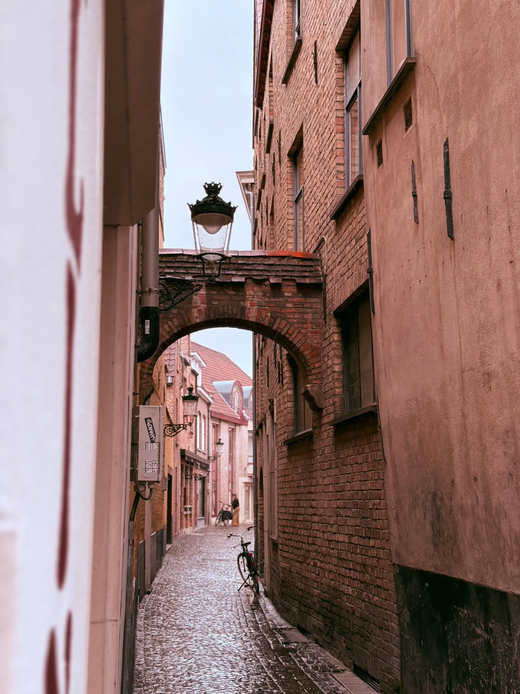

The quiet city
Every street in this town keeps two hours for itself. The first belongs to the bakers and the last to the night watch. Between them the light moves in a way you can set your day by.
I walked the same block for a week and the same door never opened twice. A tailor, a piano school, a man who repaired umbrellas with wire and patience.
A city is a held breath, released at 6 a.m.
Field note Nº 14
Fig. 01 — Street corner, 6 a.m.
What the guidebooks call quiet, the locals call normal. There is no museum queue at dawn, only the newsagent sliding fresh papers under his shutter.